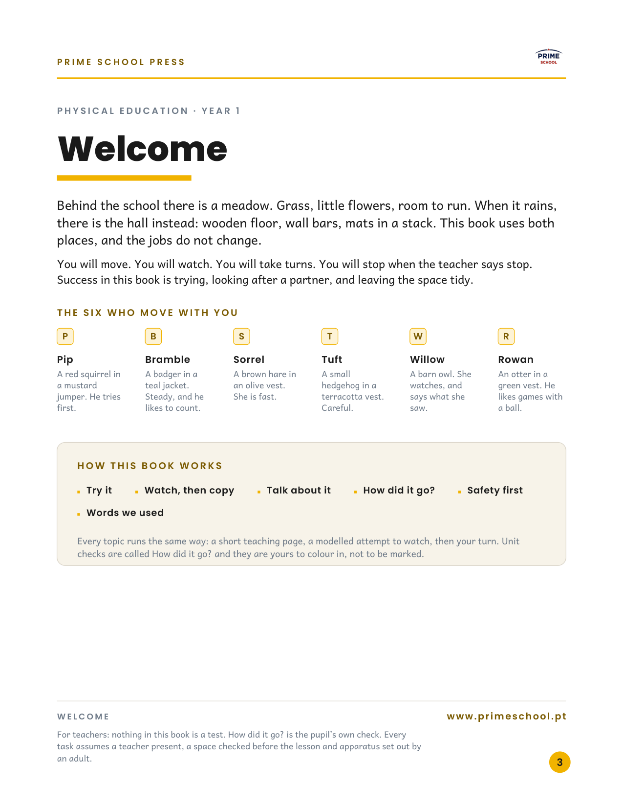
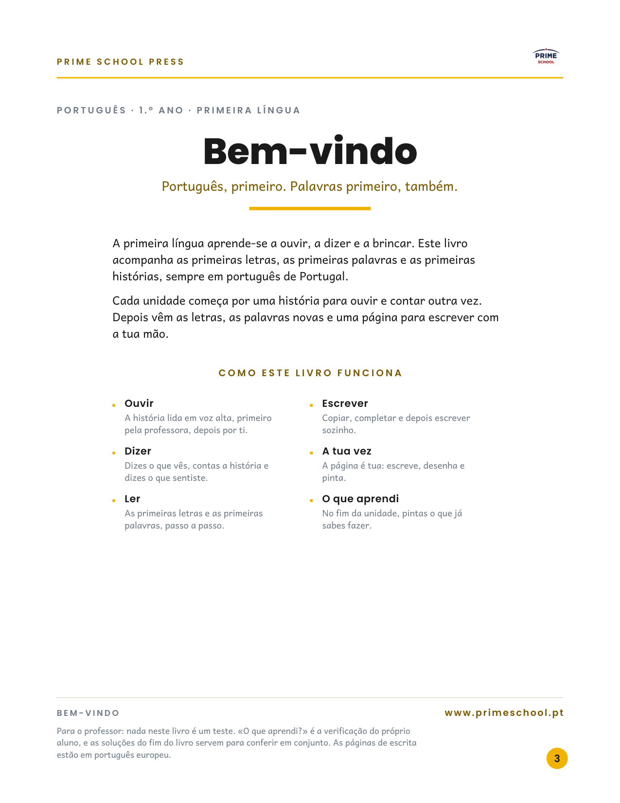
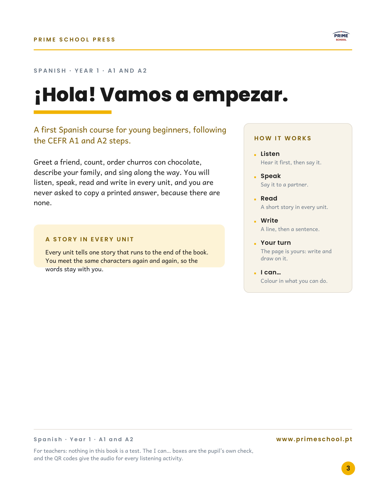
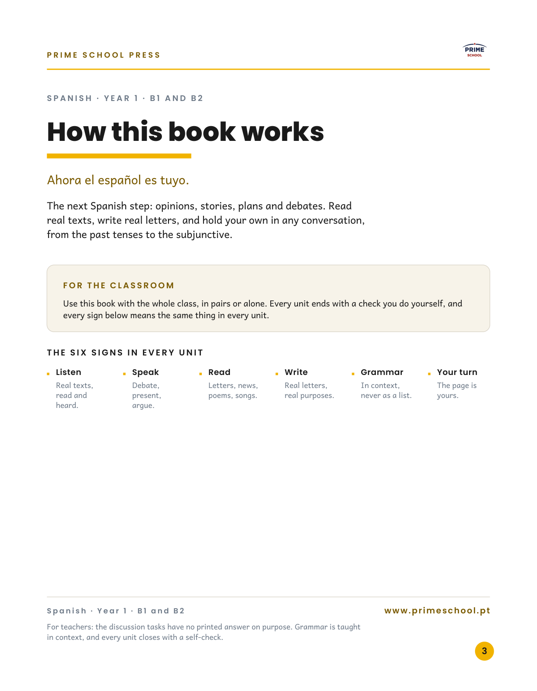

Page 2 stays as it is (the imprint). These four treatments of page 3 are in the books now, so you can also flip to page 3 in each one. Pick a favourite and I will roll it across Years 1 to 4.

Design 1 · Welcome (Physical Education)Editorial welcome: the meadow and the hall, the six who move with you as a chip row, then a cream How this book works strip. Shown on y01-physical-education.

Design 2 · Bem-vindo (Portuguese)Centred and warm, Portuguese throughout, with the six signs in two columns and the year’s gold rule. Shown on y01-portuguese.

Design 3 · ¡Hola! (Spanish A1–A2)Welcome on the left, a How it works rail on the right, and a story note in a tinted panel. Shown on y01-spanish-a1a2.

Design 4 · How this book works (Spanish B1–B2)Headed by the function, the welcome inside a For the classroom panel, and the six signs as a column row. Shown on y01-spanish-b1b2.